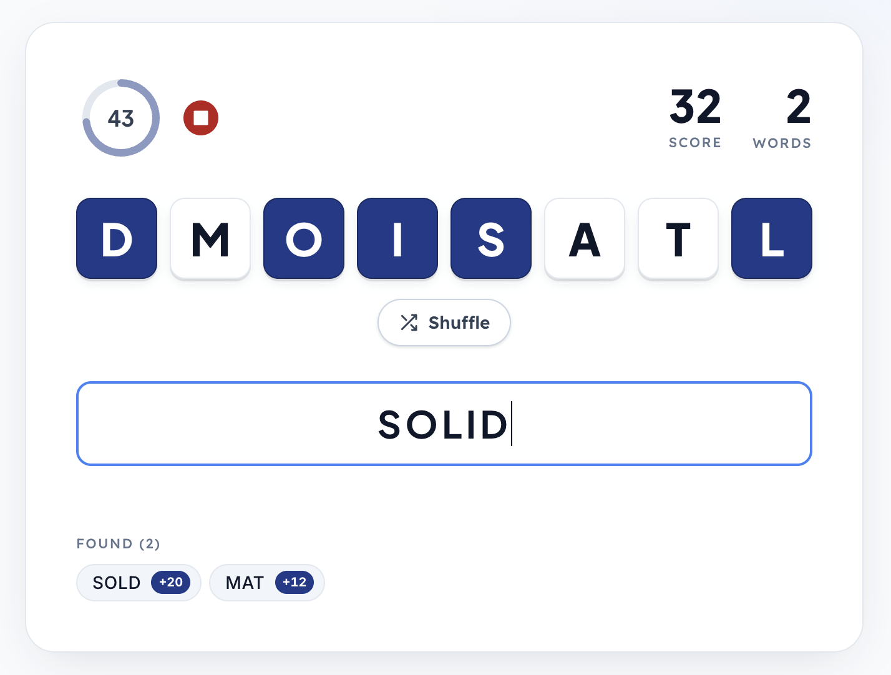
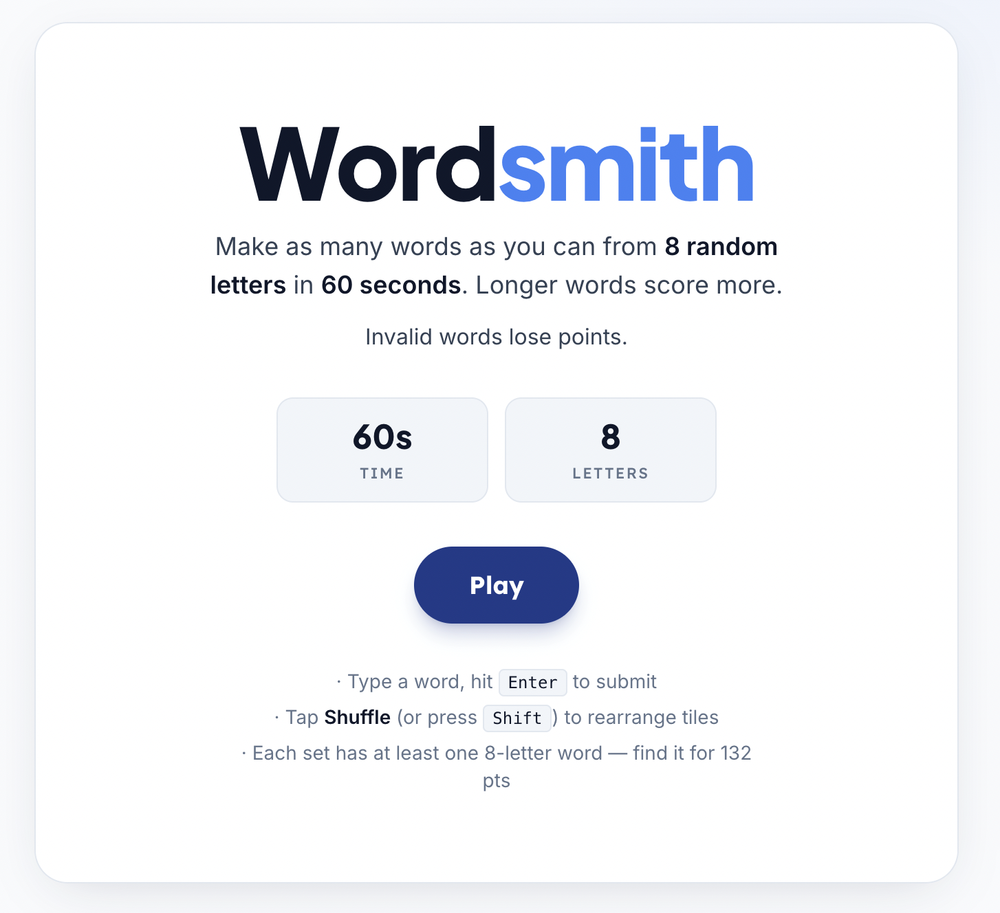
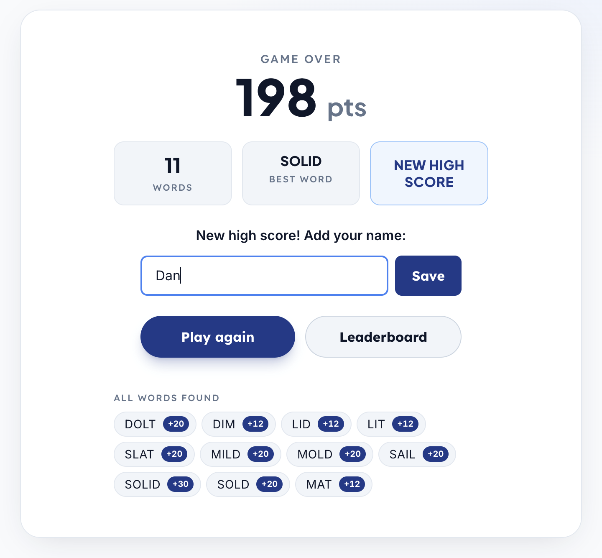

Wordsmith
A fast-paced word game built around speed, feedback, and flow.

Overview
Wordsmith is a real-time word game where players form as many words as possible from a set of letters within 60 seconds.
I designed and built the experience end-to-end, with a focus on responsiveness, interaction design, and creating a satisfying gameplay loop through immediate visual feedback.
What I Focused On
This project was less about features and more about feel.
I focused on building a tight interaction loop where every action — typing, submitting, scoring — produces immediate, meaningful feedback.
Key areas:
- Real-time input and validation with instant feedback
- Micro-interactions (score animations, shuffle motion, error states)
- Designing for speed and low cognitive load
- Creating a cohesive UI system across multiple game states
Interaction & UX Decisions
The core challenge was designing an interface that stays out of the way while still providing constant feedback.
The input field remains the primary focus at all times, while supporting elements like score, timer, and found words are visible but secondary.

- Reduced friction by eliminating unnecessary penalties and interruptions
- Prioritized keyboard-first interaction for fast input
- Designed subtle but consistent feedback for success, errors, and progress
- Added urgency through timer behavior and visual changes near the end of a round
System & Architecture
The game is built as a lightweight web app with a simple backend for leaderboard persistence.
I focused on keeping the system responsive and predictable, especially under rapid user input.
Design Note: Keeping validation client-side and deploying as a single service allowed the game to remain extremely responsive while running on minimal infrastructure.
- Front-end: React 19 (Vite, Tailwind CSS)
- Back-end: Flask + Gunicorn, SQLite (leaderboard storage)
- Infrastructure: Fly.io (Docker, persistent volume), custom domain at wordsmith.danthoreson.com

Result
The final product is a fast, replayable experience that emphasizes responsiveness and clarity over complexity.
This project reflects my interest in building products where UX, interaction design, and engineering are tightly connected.
— Dan Thoreson